Bebidas Quentes
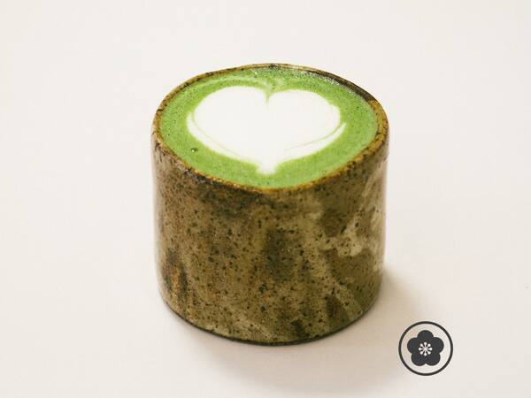
Matcha Latte
O sabor herbal do chá verde japonês ao aconchego do leite vaporizado e cremoso.
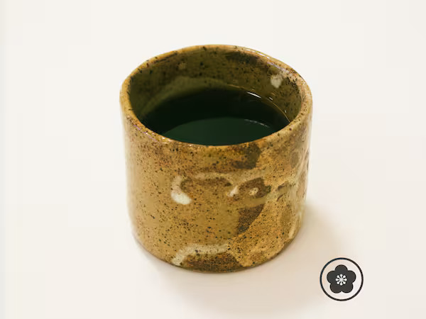
V60 Café Coado
Café coado no método Hario V60, um grão especial de alta qualidade, moído e passado na hora.
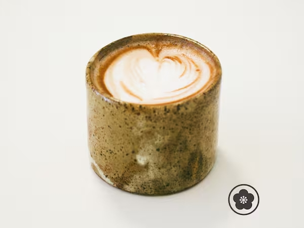
Mocha
Uma dose intensa de café espresso combinada com o conforto do leite vaporizado e uma rica calda de chocolate artesanal.
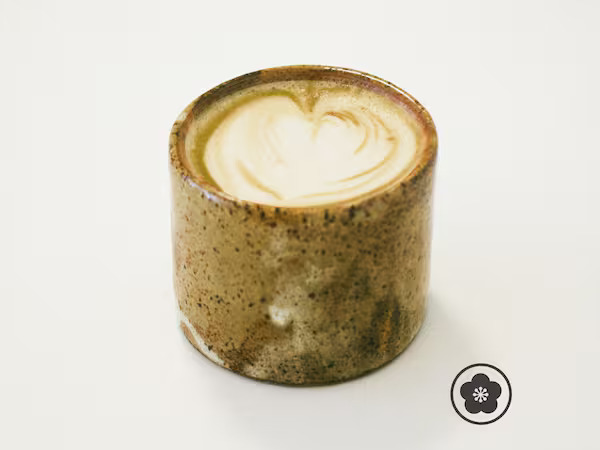
Cappucciono Tradional
Uma dose de café espresso extraída de grãos especiais de 88 pontos, combinada perfeitamente com a textura cremosa do leite vaporizado.
Bebidas Geladas
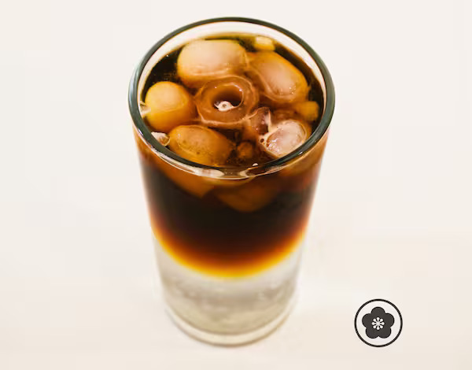
Ginger Brew
Um refrescante cold brew combinado com água tônica e xarope artesanal de gengibre.
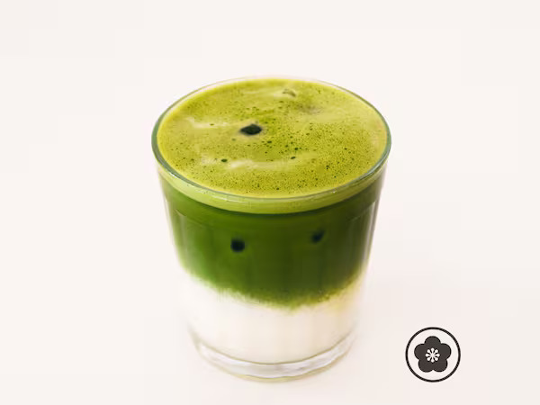
Iced Matcha Latte
A combinação refrescante do chá verde japonês com leite e gelo, servida em uma porção de 350ml.
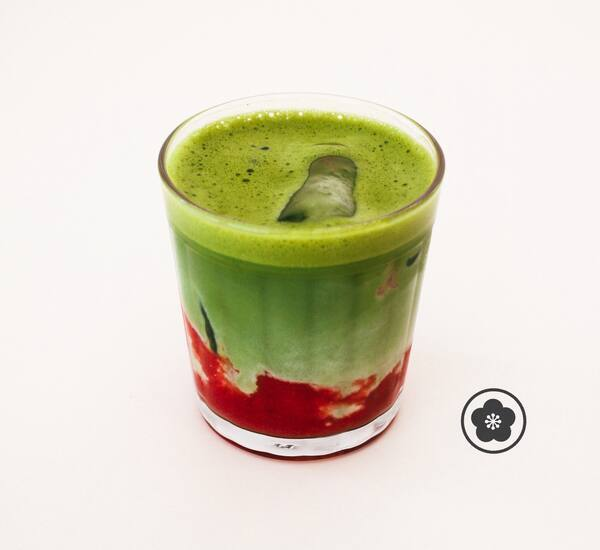
Ichigo Matcha
Matcha latte com pure de morango fresco em camadas.
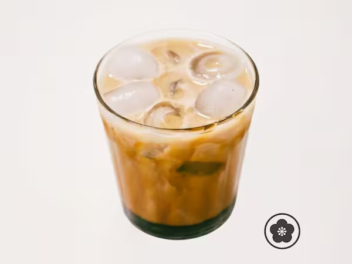
Iced Latte Caramel
A combinação refrescante de espresso, leite e gelo, enriquecida com o toque cremoso do cappuccino e o contraste do xarope de caramelo salgado.
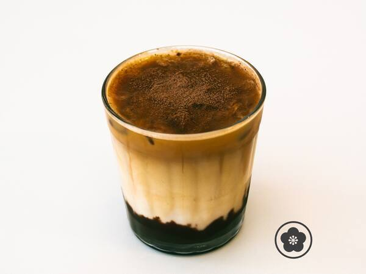
Iced Mocha
A combinação refrescante de espresso com leite, gelo e uma rica calda de chocolate artesanal, servida em uma porção de 350ml.
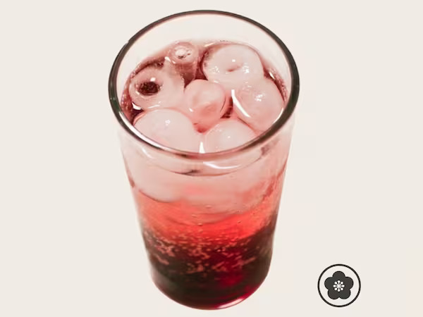
Ichigo Soda
A combinação refrescante de água gaseificada e gelo com o sabor duplo do xarope aromatizado e do xarope natural de morango, servida em uma porção de 350ml.
Cakes
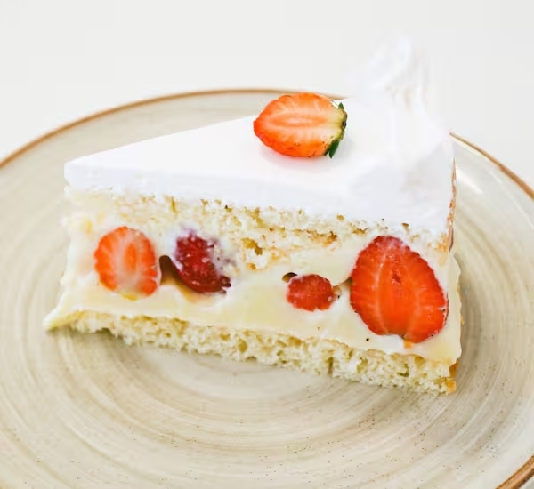
Ichigo Cake
Um bolo de pão de ló super leve e aerado, recheado com chantilly fresco e morangos.
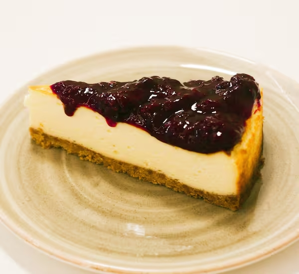
Cheesecake Redberry
Cheesecake cremoso com cobertura de frutas vermelhas.
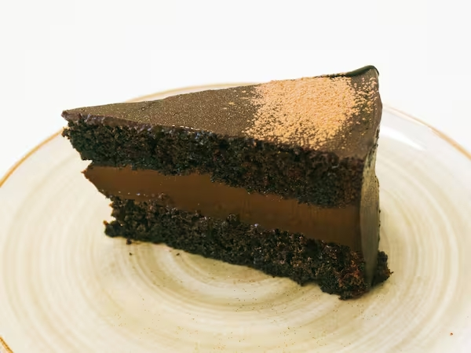
Coffeecake
Um bolo de café com uma ganache de chocolate meio amargo.
Sobremesas
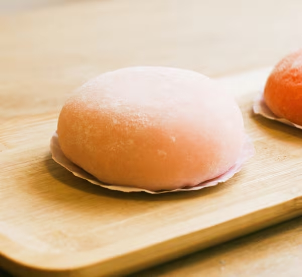
Mochi Artesanal
Um bolinho tradicional japonês feito de massa de arroz glutinoso, famoso por sua textura incrivelmente macia e elástica.
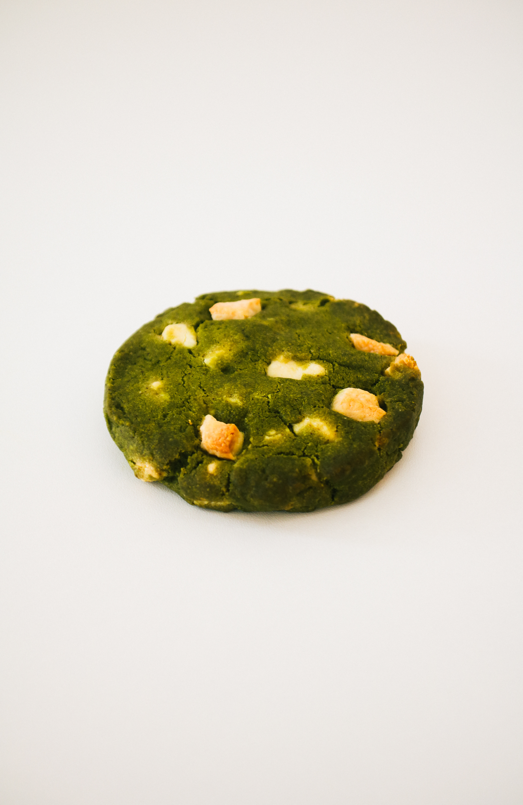
Cookie de Matcha
Cookie de chá verde japonês com gotas puras de chocolate branco.
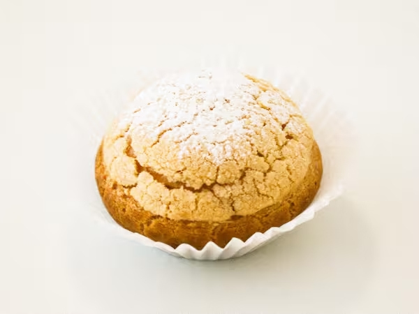
Choux Cream de Creme de Baunilha
Uma versão japonesa da clássica carolina francesa, caracterizada por uma massa incrivelmente leve e crocante recheada com um creme suave e generoso.
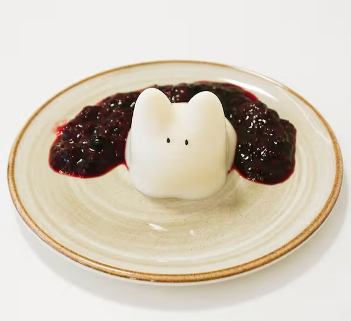
Panacota Neko
Uma sobremesa cremosa e delicada de panacota de leite tradicional, leite condensado e geleia incolor, finalizada com geleia de frutas vermelhas.
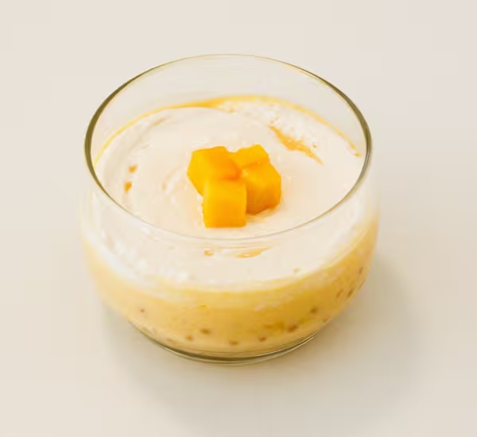
Pérolas de Manga
Sagu ao creme de manga, cobertura aveludada de cream cheese e cubinhos de manga fresca.
Salgados
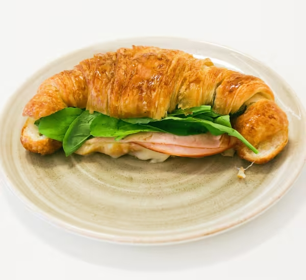
Sanduíche de Croissant
Um croissant folhado recheado com peito de peru, queijo muçarela derretido e o toque fresco da rúcula.
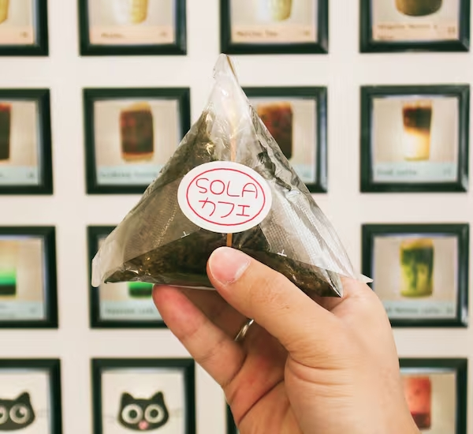
Onigiri Tradicional
Bolinho de arroz sem recheio, temperado com shogoma e envolto em alga nori.

Onigiri de Atum e Maionese
Bolinho de arroz japonês temperado com shogoma, recheado com patê de atum e maionese, envolto em alga nori.
Combos
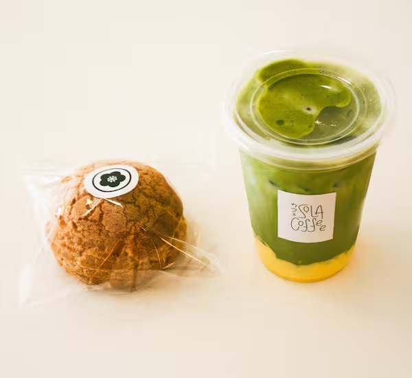
Choux Cream + Matcha Mango
Uma choux cream tradicional recheada com creme de baunilha, acompanhada de um matcha mango gelado feito com leite e um creme de manga suave.